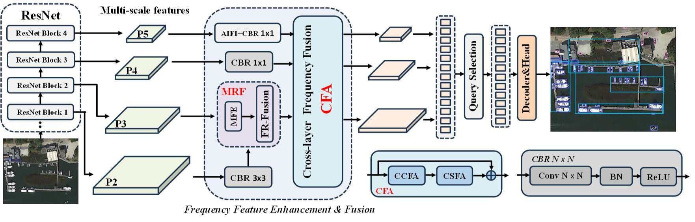
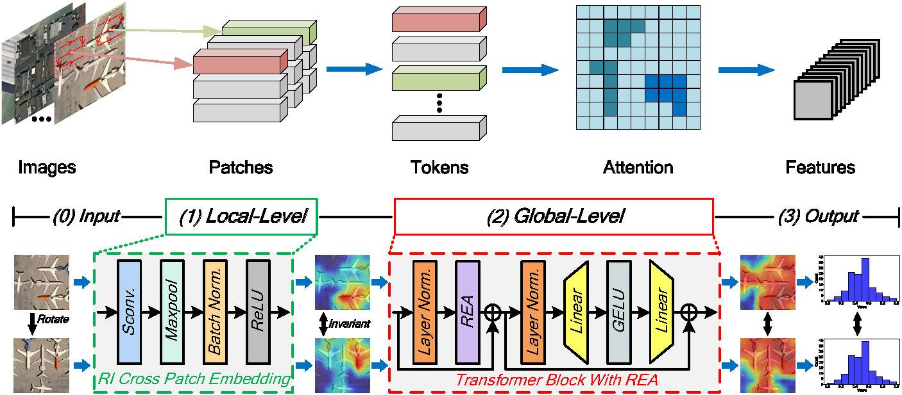
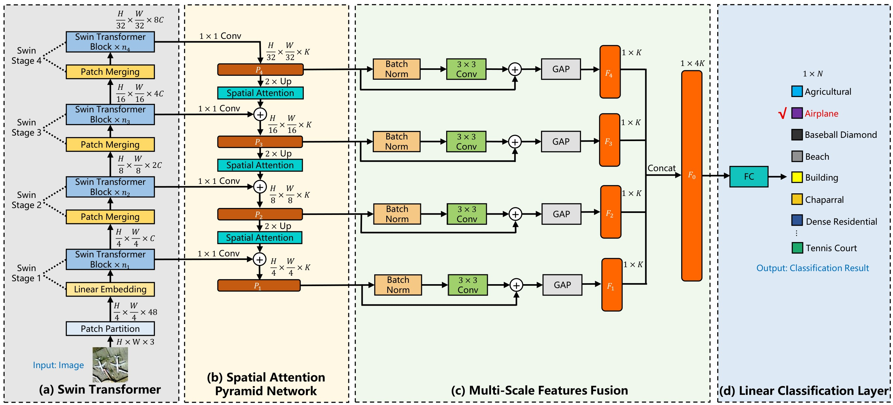
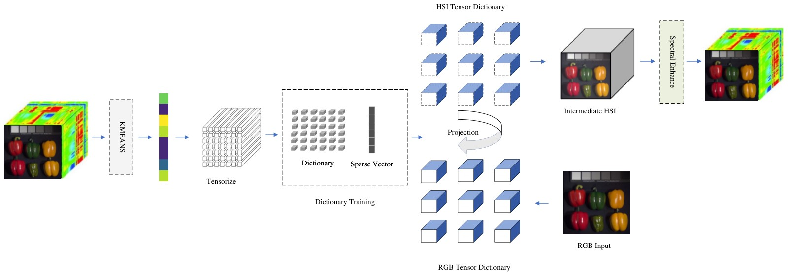
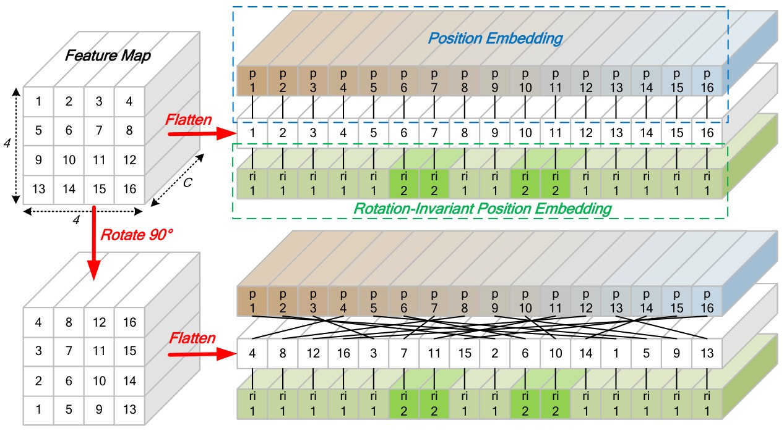
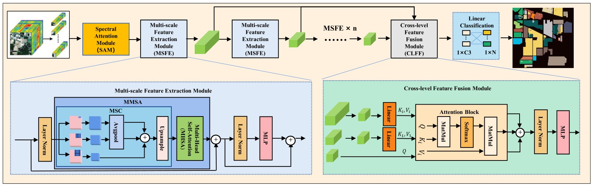
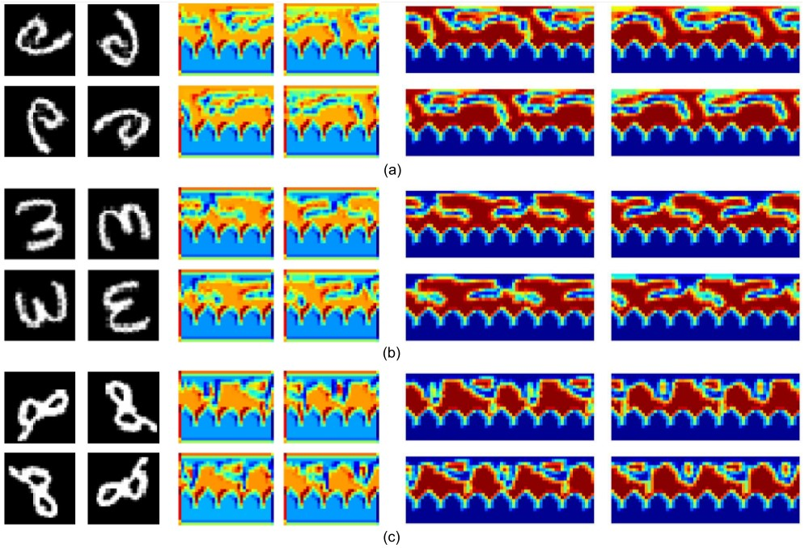
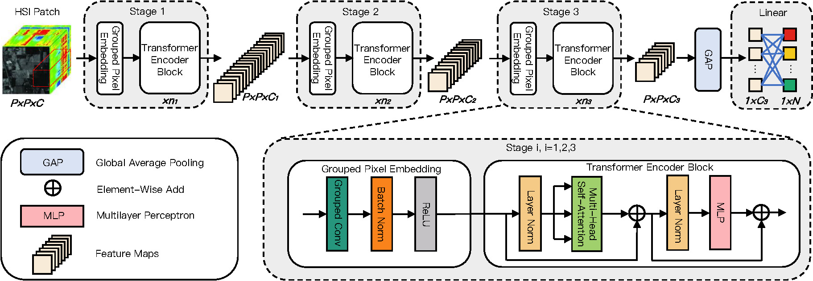

Welcome to my personal webpage!
I am currently a PhD student
in the School of Electronics and Information
at Northwestern Polytechnical University (NWPU),
where I also completed my Master's degree.
Prior to this,
I obtained my Bachelor of Science
from Huaqiao University (HQU).
My research interests include remote sensing and deep learning,
with a particular focus on intelligent interpretation tasks
for remote sensing imagery under complex variations.







